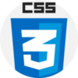
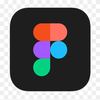

Bem vindo
A Empresa
A Infoworks é uma empresa de tecnologia sediada em Itajubá, formada por quatro empresários especialistas na área de TI. A empresa oferece soluções tecnológicas de alta qualidade para clientes em todo o país, com o objetivo de simplificar e automatizar processos de negócios por meio de soluções inovadoras. Além disso, a Infoworks mantém um escritório na Fepi, uma renomada instituição de ensino de tecnologia, para estreitar laços com a comunidade acadêmica e atrair talentos em potencial. A empresa também oferece suporte online para seus clientes, garantindo que seus produtos e serviços sejam acessíveis e fáceis de usar em qualquer lugar do mundo. Com um compromisso inabalável com a excelência e a inovação, a Infoworks está sempre à frente das tendências do mercado e empenhada em proporcionar a melhor experiência possível aos seus clientes.
O Projeto
Infoworks é um projeto de uma página web que tem como propósito oferecer serviços informais aos usuários. Através desta plataforma, o usuário pode oferecer e contratar serviços diversos de maneira simples e rápida. A ideia por trás do Infoworks é criar uma comunidade de pessoas que desejam oferecer seus serviços informais, tais como serviços de limpeza, jardinagem, costura, pintura, entre outros, e pessoas que estão em busca de tais serviços. A página funcionará de maneira simples: o usuário poderá criar um perfil informando suas habilidades e serviços oferecidos, além de informar a região onde atua. Já os usuários que estão em busca de um serviço poderão buscar por profissionais com base em sua localização e avaliações de outros usuários. Com o Infoworks, espera-se facilitar a vida de muitas pessoas que estão em busca de serviços informais de qualidade, além de oferecer uma oportunidade de trabalho para aqueles que desejam utilizar suas habilidades para gerar uma renda extra. Além disso, a página também irá oferecer uma plataforma segura para que o pagamento dos serviços contratados possa ser feito de maneira segura e transparente, garantindo a satisfação tanto do prestador de serviços quanto do contratante. Em resumo, a Infoworks é um projeto promissor que tem como objetivo oferecer uma solução prática e eficiente para a contratação de serviços informais, além de fomentar o empreendedorismo e o trabalho autônomo.
Infoworks - Serviços Informais
Tecnologias utilizadas
O projeto em questão utilizou uma variedade de tecnologias para atender às suas necessidades específicas. Para o desenvolvimento da interface do usuário, foram utilizados HTML e CSS, que permitem a criação de páginas web visualmente atraentes e responsivas. Além disso, o JavaScript foi utilizado para fornecer interatividade e dinamismo ao site. Para a criação do back-end, o PHP foi escolhido por sua capacidade de manipular dados e interagir com o banco de dados, que foi gerenciado pelo PHP MyAdmin. O Visual Studio foi utilizado como ambiente de desenvolvimento integrado (IDE) para programação. Para a criação dos wireframes e protótipos de interface, o Figma foi utilizado. Por fim, para a documentação do projeto, o MkDocs foi utilizado para criar uma documentação dinâmica e fácil de usar. A combinação dessas tecnologias permitiu o desenvolvimento de um projeto completo e funcional.
 
Localização
FEPI - Fundação de Ensino e Pesquisa de Itajubá, Centro Universitário de Itajubá Av. Dr. Antônio Braga Filho, 687 · (35) 3629-8400